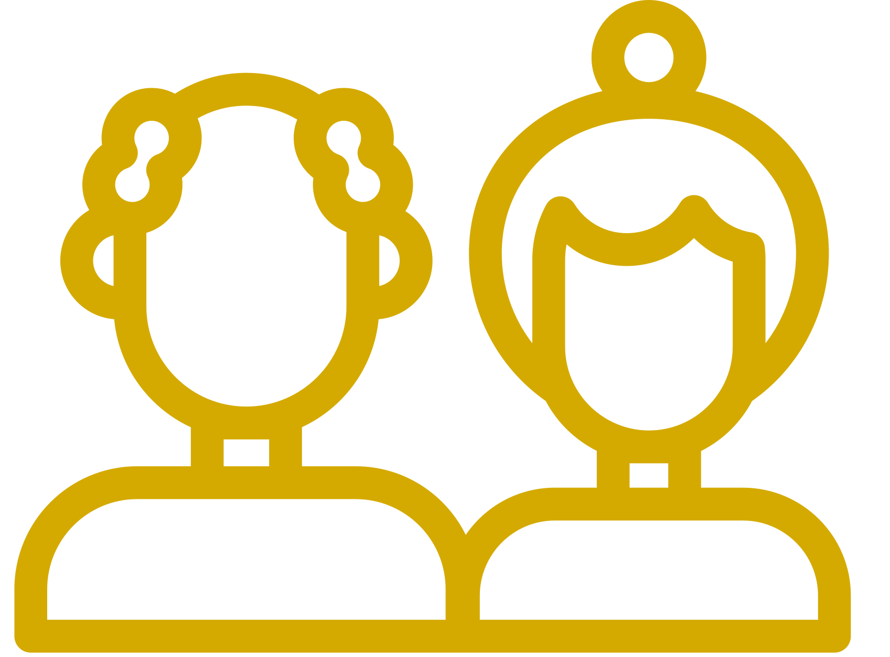

Consulta de Geriatria
ULS Região de Aveiro

Ferramentas de apoio à consulta
Selecione a ferramenta que pretende utilizar.
Recomendações Consulta de Geriatria
Selecione recomendações individualizadas para utentes e cuidadores.
Abrir recomendações →Plano terapêutico
Organize a medicação por horários e prepare uma tabela personalizada para impressão.
Abrir plano terapêutico →